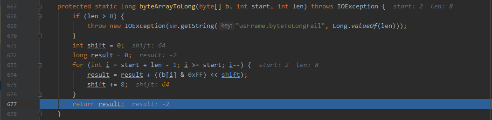

文章首发于安全客，链接https://www.anquanke.com/post/id/222279
Apache Tomcat在9.0.37版本的更新中，修复了一个Websockt的拒绝服务漏洞
由于Websocket frame中的payload的长度没有正确验证，导致陷入了无限循环，造成拒绝服务。
Websocket 协议
RFC 6455中规定了Websocket frame的结构
1 | 0 1 2 3 |
前9位是一些标志位，接着7位为payload length，后面64位为扩展的payload length，payload len就是最后payload data的长度，对于扩展payload len，也做了详细的规定
1 | Payload length: 7 bits, 7+16 bits, or 7+64 bits |
当payload len为0-127之间时，payload len就是payload data的长度，当payload len为126时，只使用后面的2个字节作为payload data的长度，当payload len为127时，则说明后面的8个字节是payload data长度，这时64位的Extended Payload Len最高位必须为0，代表无符号整数
漏洞分析
补丁
先看Apache Tomcat官方的更新commit
在org/apache/tomcat/websocket/WsFrameBase.java中的processRemainingHeader函数中，当payloadLength为127时，获取新的payloadLength，增加了非负的判断。
代码分析
这里使用Apache Tomcat9.0.35+JDK1.8.0_271进行调试，首先在补丁代码处下断点
使用tomcat自带的examples中的Websocket的接口ws://localhost:8080/examples/websocket/echoProgrammatic，为了能让代码走到断点行，需要payload len为127，所以构造一个payload len为0b1111111，payload data为test的Websocket数据包发送
可以看到，inputBuffer就是我们发送的整个数据包，此时取出了其中的payload len为127，接着我们进入byteArrayToLong函数
这里start=2 len=8，也就是正好取出了Websocket数据包的16位之后的64位数据，也就是Extended Payload Length进行计算，每次取低8位进行byte到long的转换，由于long数据类型是64位有符号的Java原始数据类型，当计算到最高8位时，result将是一个负数，我们构造的数据包Extended Payload Length64位全为1，查看其结果

可以看到，最终结果是为负数，接着我们查看代码继续调试，寻找当payload len为负数时，会发生什么
当处理完payload len之后，当前state=State.DATA，由于已经计算出payload data的长度，此时需要用payload len来处理payload data，在processData函数增加断点，并跟踪进去
接着进入processDataText函数

进入transformation.getMoreData函数
主要功能就是把payload data通过payload len一字节一字节的取出来放到dst中，payloadWritten从0自增。当取完payload len的数据之后，不会在意之后是否还存在数据，就会返回END_OF_FRAME，如果payload len大于真实的payload data的长度，那么当发现inputBuffer没有数据了，就会返回UNDERFLOW，其他情况就会返回OVERFLOW，所以如果payload len为负数，那么也会返回OVERFLOW，接着返回到processDataText函数中，我们认真观察这段代码
正常情况下，会因END_OF_FRAME而直接不进入循环，当返回UNDERFLOW或者OVERFLOW两种状态时，会进入循环并进行messageBufferBinary也就是payload data的utf-8解码，当我们将payload len变为负数传入时，解码结果将返回UNDERFLOW，从而进入判断
由于payload len为负数，导致取payload data时返回的TransformationResult.OVERFLOW，从而utf-8解码的这个循环结束，再次调用tr = transformation.getMoreData(opCode, fin, rsv, messageBufferBinary);，进入读取payload data的循环，由于返回值依然是OVERFLOW，这样就进入了无限循环，导致CPU爆满，那么为什么OVERFLOW状态会导致这个循环的无限执行呢？
由于Websocket支持最大64位有符号数长度的payload data，而在取数据到messageBufferBinary时，只有8192的容量，所以当数据过长一次没有全部读取到Buffer时，会返回OVERFLOW用于后续循环再次读取
但是由于payload len为负时，错误地将其处理为OVERFLOW状态，从而导致无限地循环，OVERFLOW状态永远都不会变，这才是整个漏洞最主要的原因。
Exploit
参考github.com/RedTeamPentesting/CVE-2020-13935
效果
一个数据包即可
影响范围
- 9.0.0.M1~9.0.36
- 10.0.0-M1~10.0.0-M6
- 8.5.0~8.5.56
- 7.0.27~7.0.104
Tomcat Websocket协议BUG
分析
在调试过程中，发现当发送64位全1的Extended Payload Len时，最终计算的结果是-2，是-2，是-2
真实结果应该是-1才对啊，经过调试发现当进行32-39这8位数据时，发现result=-1

询问@fnmsd师傅才发现，是因为0xFF是一个32位int型数据，当32位数据最高位为1时，这就是个负数，应该进行long的强制类型转换，也就是说，想要把payload len变为负，不需要最高位置1，前32位置0，33位为1，也会成功触发攻击。
当跟踪其他对于byte的数据转换时发现，基本都在可能出现问题的地方进行了强制类型转换
影响
对于协议来说，当发送的Websocket数据长度为2**31-2**32-1时，如果是漏洞版本Tomcat，将会直接触发漏洞，修补版本，会抛异常，当数据长度大于2**32-1时，计算出的payload len可能会小于真实长度，从而造成数据丢失。
参考
https://blog.redteam-pentesting.de/2020/websocket-vulnerability-tomcat/
https://cert.360.cn/warning/detail?id=c01c205c79fc1a9740f6ca9b133fb6f7